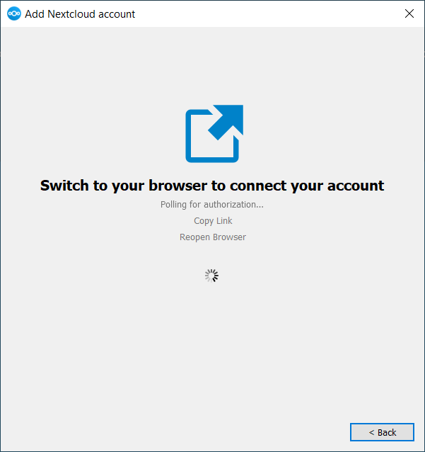

Instalación
You can download the latest version of the Nextcloud Desktop Synchronization Client from the Nextcloud download page. There are clients for Linux, macOS, and Microsoft Windows.
As edicións do servidor compatíbeis actualmente son as tres últimas versións estábeis no momento da publicación. Isto quere dicir que a serie de edicións «latest» está a ser compatíbel coas versións estábeis maiores/principais do servidor. Consulte https://github.com/nextcloud/server/wiki/Maintenance-and-Release-Schedule para as versións principais compatíbeis.
A instalación en macOS e en Windows é a mesma que para calquera aplicación de software: descargue o programa e após prema dúas veces para iniciar a instalación e, a continuación, siga o asistente de instalación. Após que se instale e configure o cliente de sincronización manterase automaticamente actualizado; consulte O actualizador automático para obter máis información.
Os usuarios de Linux deben seguir as instrucións da páxina de descarga para engadir o repositorio axeitado para a súa distribución Linux, instalar a chave de sinatura e após empregar os seus xestores de paquetes para instalar o cliente de sincronización de escritorio. Os usuarios de Linux tamén actualizarán os seus clientes de sincronización a través do xestor de paquetes e o cliente amosará unha notificación cando estea dispoñíbel unha actualización.
Os usuarios de Linux tamén deben ter activado un xestor de contrasinais, como Gnome Keyring ou Kwallet, para que o cliente de sincronización poida acceder automaticamente.
Tamén atopará ligazóns a ficheiros de código fonte e versións máis antigas na páxina de descarga.
Requisitos do sistema
Windows 10+ (só 64-bits)
macOS 12.0+ (64-bits only)
Linux (Ubuntu 22.04 or openSUSE 15.5 or Alma 8 or …) (64-bits only)
Nota
Para as distribucións de Linux, asistímolas, se é tecnicamente factíbel, as publicacións actuais de LTS. Para BSD, asistímolas, se é tecnicamente factíbel mais non as probamos
Personalizar a instalación de Windows
Se só quere instalar o cliente de sincronización de escritorio de NextCloud no seu sistema local, pode simplemente iniciar o ficheiro .msi e configuralo no asistente que aparece.
Funcionalidades
O instalador MSI fornece varias funcionalidades que se poden ser instaladas ou retiradas individualmente, que tamén pode controlar a través da liña de ordes, se está a automatizar a instalación, execute a seguinte orde:
msiexec /passive /i Nextcloud-x.y.z-x64.msi
A orde instalará o cliente de sincronización de escritorio de NextCloud na localización predeterminada coas funcionalidades predeterminadas activadas. Se quere desactivar, p. ex., iconas de atallo de escritorio, simplemente pode cambiar a orde anterior pola seguinte:
msiexec /passive /i Nextcloud-x.y.z-x64.msi REMOVE=DesktopShortcut
Consulte a seguinte táboa para obter unha lista de funcionalidades dispoñíbeis:
Funcionalidade |
Activada (predet.) |
Descrición |
Propiedade para desactivala |
|---|---|---|---|
Client |
Si, obrigatorio |
O cliente real (ou propiamente dito) |
|
DesktopShortcut |
Si |
Engade un atallo ao escritorio |
|
StartMenuShortcuts |
Si |
Engade un atallo ao menú de inicio |
|
ShellExtensions |
Si |
Engade a integración con Explorer |
|
Instalación
Tamén pode optar por instalar o propio cliente empregando a seguinte orde:
msiexec /passive /i Nextcloud-x.y.z-x64.msi ADDDEFAULT=Client
Se, por exemplo, quere instalar todo, agás o DesktopShortcut e a funcion ShellExtensions, ten dúas posibilidades:
Nomear explicitamente todas as funcións que realmente quere instalar (lista autorizada) onde sempre está instalado
Client:msiexec /passive /i Nextcloud-x.y.z-x64.msi ADDDEFAULT=StartMenuShortcuts
Pasar as propiedades
NO_DESKTOP_SHORTCUTeNO_SHELL_EXTENSIONS:msiexec /passive /i Nextcloud-x.y.z-x64.msi NO_DESKTOP_SHORTCUT="1" NO_SHELL_EXTENSIONS="1"
Nota
O .msi de Nextcloud lembra estas propiedades, polo que non é preciso especificalas nas actualizacións.
Nota
Non pode usala para cambiar as funcionalidades instaladas, se quere facelo, consulte a seguinte sección.
Cambio de funcionalidades instaladas
Pode cambiar as funcionalidades instaladas máis adiante empregando as propiedades REMOVE e ADDDEFAULT
Se quere engadir o atallo de escritorio máis adiante, execute a seguinte orde:
msiexec /passive /i Nextcloud-x.y.z-x64.msi ADDDEFAULT="DesktopShortcut"
Se quere retiralo, simplemente execute a seguinte orde:
msiexec /passive /i Nextcloud-x.y.z-x64.msi REMOVE="DesktopShortcut"
Windows fai un seguimento das funcionalidades instaladas e usando REMOVE ou ADDDEFAULT só afectará ás funcións mencionadas.
Compare REMOVE e ADDDEFAULT na Guía do instalador de Windows.
Nota
Non pode especificar REMOVE na instalación inicial xa que desactivará todas as funcionalidades.
Cartafol de instalación
Pode axustar o cartafol de instalación especificando a propiedade INSTALLDIR así:
msiexec /passive /i Nextcloud-x.y.z-x64.msi INSTALLDIR="C:\Program Files\Non Standard Nextcloud Client Folder"
Teña coidado ao usar PowerShell en troques de cmd.exe, pode ser complicado conseguir que o espazo de branco escape alí. Especificar INSTALLDIR deste xeito só funciona na primeira instalación, non pode simplemente volver invocar o .msi cunha ruta diferente. Se aínda ten que cambialo, desinstáleo primeiro e reinstáleo coa nova ruta.
Desactivar as actualizacións automáticas
Para desactivar as actualizacións automáticas, pode pasar a propiedade SKIPAUTOUPDATE:
msiexec /passive /i Nextcloud-x.y.z-x64.msi SKIPAUTOUPDATE="1"
Executar após a instalación
Para executar o cliente automaticamente após a instalación, pode pasar a propiedade LAUNCH:
msiexec /i Nextcloud-x.y.z-x64.msi LAUNCH="1"
Esta opción tamén retira a caixa de selección para que os usuarios decidan se queren executar o cliente para o modo non pasivo/tranquilo.
Nota
Esta opción non ten ningún efecto sen interface gráfica.
Non reiniciar após a instalación
O cliente de Nextcloud programa un reinicio após a instalación para asegurarse de que a extensión do Explorador estea correctamente (des)cargada. Se está a coidar o reinicio Vde. mesmo, pode configurar a propiedade REBOOT:
msiexec /i Nextcloud-x.y.z-x64.msi REBOOT=ReallySuppress
Isto fará que msiexec saía co erro ERROR_SUCCESS_REBOOT_REQUIRED (3010). Se a súa ferramenta de despregue interpreta isto como un erro real e quere evitalo, pode, en troques, querer definir DO_NOT_SCHEDULE_REBOOT:
msiexec /i Nextcloud-x.y.z-x64.msi DO_NOT_SCHEDULE_REBOOT="1"
Asistente de instalación
O Asistente de instalación levao paso a paso a través das opcións de configuración e dos axustes da conta. En primeiro lugar, ten que introducir a URL do seu servidor NextCloud.

Se xa ten unha conta nunha instancia de NextCloud, prema no botón Acceda ao seu Nextcloud. Se non ten unha instancia de NextCloud e unha conta alí, pode que queira rexistrar unha conta cun provedor. Nese caso prema en Crear conta co Provedor. Teña presente que o cliente de escritorio pode ter sido construído sen compatibilidade con provedores. Nese caso, non verá esta páxina. En troques, solicitaráselle a páxina seguinte.

Introduza a URL para a súa instancia de NextCloud. O URL é o mesmo URL que escribe no seu navegador cando tenta acceder á súa instancia de NextCloud.
Agora o seu navegador web debería abrir e pedirlle que acceda á súa instancia de NextCloud. Introduza o seu nome de usuario e contrasinal no seu navegador web e permita o acceso. Após, volva ao asistente. Teña en conta que pode que non necesite introducir o seu nome de usuario e contrasinal se xa está conectado co seu navegador.

Na pantalla de opcións de cartafol local, pode sincronizar todos os seus ficheiros no servidor NextCloud ou seleccionar cartafoles individuais. O cartafol de sincronización local predeterminado é NextCloud, no seu directorio persoal. Tamén pode cambiar isto.
Cando remate de seleccionar os seus cartafoles de sincronización, prema no botón Conectar na parte inferior dereita. O cliente tentará conectarse ao servidor NextCloud e, cando o teña conseguido, o asistente péchase. Agora pode observar a actividade de sincronización se abre o diálogo principal premendo na icona da área de notificación.